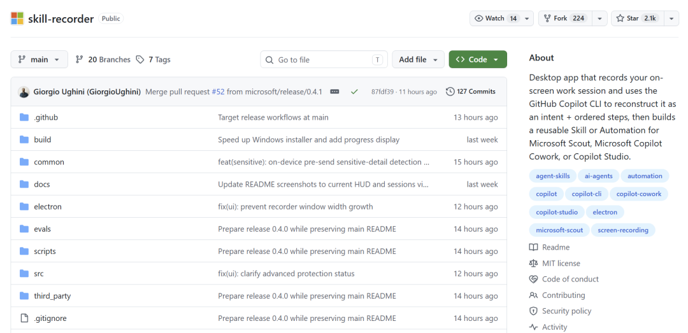
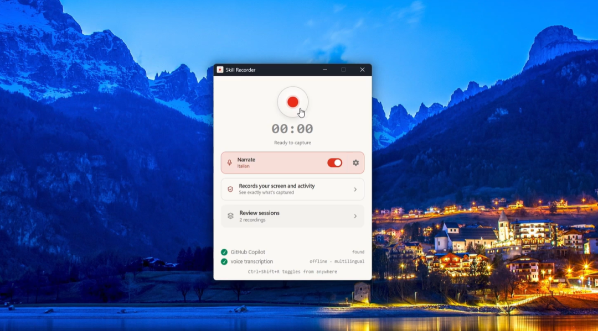
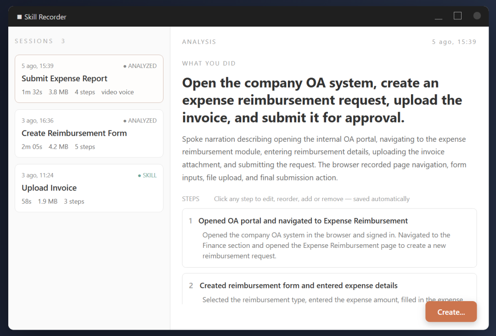
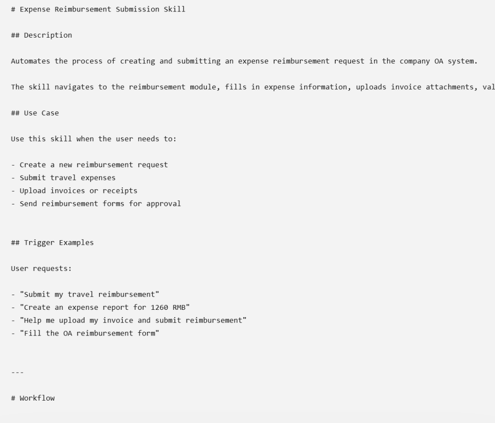
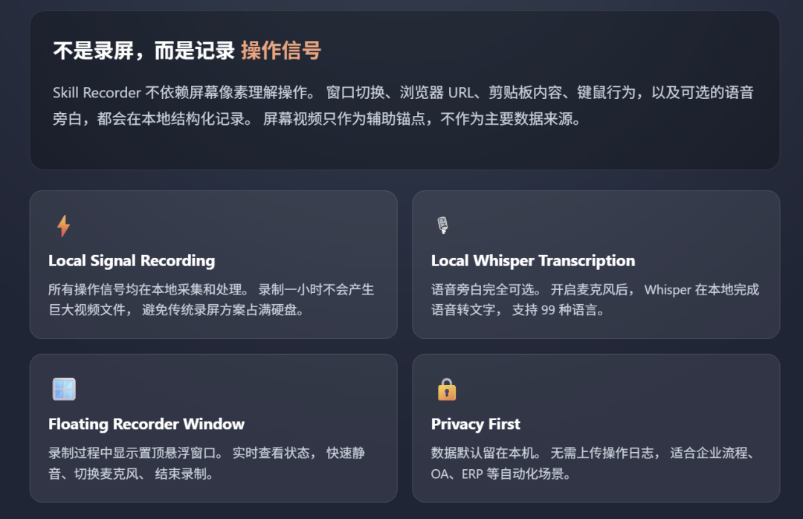
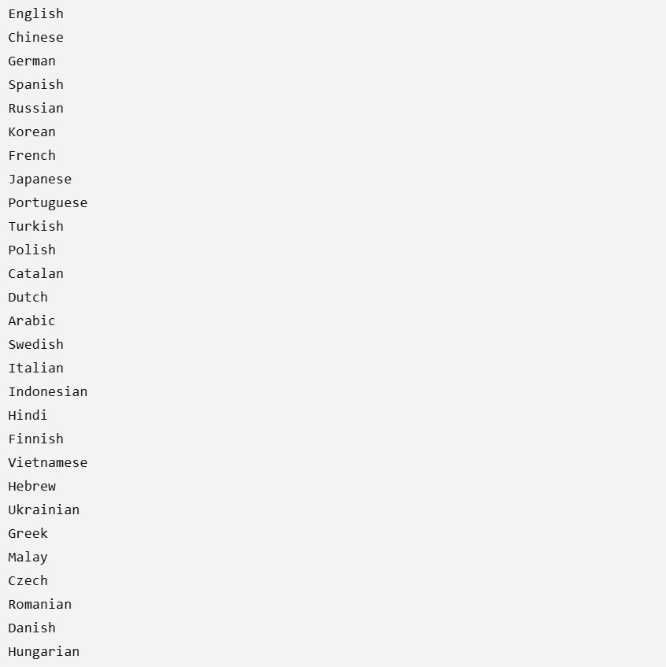
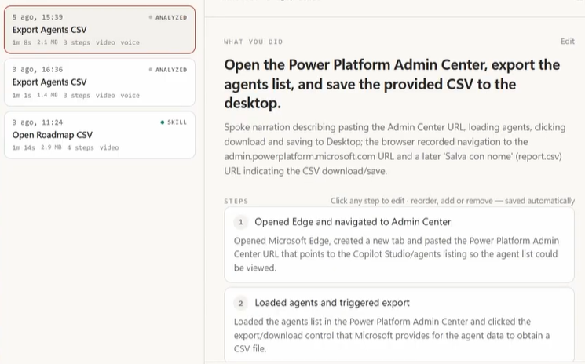

做过的Agent Skill的人应该都知道。
写一份SKILL.md，要从头到尾描述一个操作流程。
要记住每个步骤和每个工具。
还要把边界条件、输入参数等也写清楚。
真的很折磨。
最近我在 GitHub 上刷到了一个微软开源的东西。
它叫 skill-recorder，在 GitHub 上有 2072 个 Star。

它是用来把操作录下来、自动生成 AI 能执行的 Skill 文档的桌面工具。
我给你演示一下，你就知道它有多方便了
我要在OA系统中填写一张报销单。
装完 skill-recorder 。
然后按住 Ctrl+Shift+R 来开始录制屏幕。

然后按照正常的程序来操作。打开OA页面，填写金额、上传发票、点击提交。
它会悄悄记录下你完成任务的全过程。
录制结束之后，点击 Analyze，GitHub Copilot 就开始工作了。
它不会对点击了哪个像素点进行分析。
它所关心的是你做了哪些事情——打开报销页面、填入金额、上传发票、最后点击提交。

然后自动生成一个SKILL.md。

这份文档既能让人看懂，也能让 AI 直接执行。
下次处理报销流程的时候，只要把SKILL.md交给Agent，它就可以按照步骤自动完成整个过程。
不需要写复杂的提示词，也不需要学习RPA脚本，剩下的整理、描述和转换都由Copilot来完成。
而且这个技能不是只对自己有用。放入团队仓库之后，其他同事也可以直接调用。
有人可能会好奇，它是怎么做到的
01 后台录制，但是记录的不是视频。
Skill Recorder 捕获的是操作信号，并不是屏幕上显示的像素。
窗口切换、浏览器URL、剪贴板内容、可选的语音旁白等都保存在本地。

屏幕视频只起辅助定位的作用，并不占据主要信号。录制一小时的视频，硬盘也不会被填满。
旁白不是必须的。开启麦克风之后，Whisper 会把声音转换成文字，并且可以支持 99 种语言。

并且在录制的时候有一个浮动的小窗口，一直置顶显示状态。静音、切麦克风、结束录制，随便就可以做。
02 Copilot 分析，帮你重建操作流程。
录制过程中所有的数据都保存在本地，不会上传任何数据。
只有你在点击 Analyze 的时候，才会把事件时间线、抽帧截图以及旁白文字上传到 GitHub 云上。
Copilot 把这些信号串联起来，重构出一个“总的意图+有条理的步骤”。

它知道你正在“填制销单”，并不是你“点击了第三个按钮”。
这是根据语义来执行的方式，并不是简单的坐标回放。
并且录制一次就可以复用到N个相同结构的任务中去。遇到类似报销流程的时候，Agent 不需要重新学习，直接使用这个Skill就可以了。
这也是它与传统的RPA最大的区别。
RPA录制的是固定路径，一个流程只能跑一个页面，如果页面稍微改动按钮位置就会失效。
03 输出 SKILL.md，人可以看，AI也可以跑。
生成的SKILL.md本质上就是Markdown+YAML frontmatter。
它不是伪代码，也不是某种特定的 DSL。
执行的时候，它会先调用原生工具，比如 gh CLI、web_fetch、git 等等，不会死记硬背某个页面上按钮的位置。
界面改版了也无妨，流程逻辑没有变化，SKILL.md 依然可以使用。
官方原话很直白：prefer the agent's native tools over replaying UI clicks。
04 一次录制之后，所有的Agent都可以被重复使用。
生成的SKILL.md并不仅限于给Copilot使用。
Microsoft Scout、Copilot Cowork、Copilot Studio 都可以被直接调用。
甚至于Claude Code、Codex、Cursor等第三方Agent，只要支持SKILL.md格式，也可以运行。
还加入了敏感信息检测。在发送之前用本地运行的OCR进行扫描，并且自动屏蔽掉密码和Token。
录制屏幕时不小心露出了什么，它会帮助你在发送之前把它们遮住。
效果这么好，估计大家已经迫不及待想试试了
Skill Recorder 是 source-only 发布，一行命令就能装好。
Windows PowerShell：
$commit="7b0efa9534d59efb4e488a9fe855862ecba45844"; $env:SKILL_RECORDER_COMMIT=$commit; irm "https://raw.githubusercontent.com/microsoft/skill-recorder/$commit/install.ps1" | iex
macOS、Ubuntu：
commit="7b0efa9534d59efb4e488a9fe855862ecba45844"; curl -fsSL "https://raw.githubusercontent.com/microsoft/skill-recorder/$commit/install.sh" | SKILL_RECORDER_COMMIT="$commit" bash
不需要管理员权限，也不需要全局安装 Node.js。不过要订阅 Copilot。
安装好之后，按下 Ctrl+Shift+R 开始录制，录完之后分析一下，就会有一份 SKILL.md 文件。
到这里边界也给大家提提
Analyze 阶段必须走云端，离线分析还不支持。所以官方反复提醒：别录密码、Token、API Key。
终端命令录制还没有做，不过已经在计划中了。
另外它只支持macOS、Windows 11和Ubuntu，其他的Linux发行版目前没有覆盖到。
写在最后
我也会写SKILL.md。
但是每次都要重新梳理流程、定义工具、补充边界条件，并且还要反复调整，让 AI 能够准确地执行。
Skill Recorder 解决的就是这个过程。你只需要像平时一样操作一次，它就会自动整理出步骤，并生成可以直接使用的SKILL.md。
不需要编写代码，也不需要手动整理流程，录一次，直接得到一个可用的 Skill。
有需要的朋友可以试试。
项目基于 MIT 协议开放,感兴趣的同学可以去 GitHub 仓库看看源码和文档。
开源地址：https://github.com/microsoft/skill-recorder
既然看到这了,欢迎随手点赞、在看、转发,也可以给我个星标⭐,接收最新的文章,我们下期见!